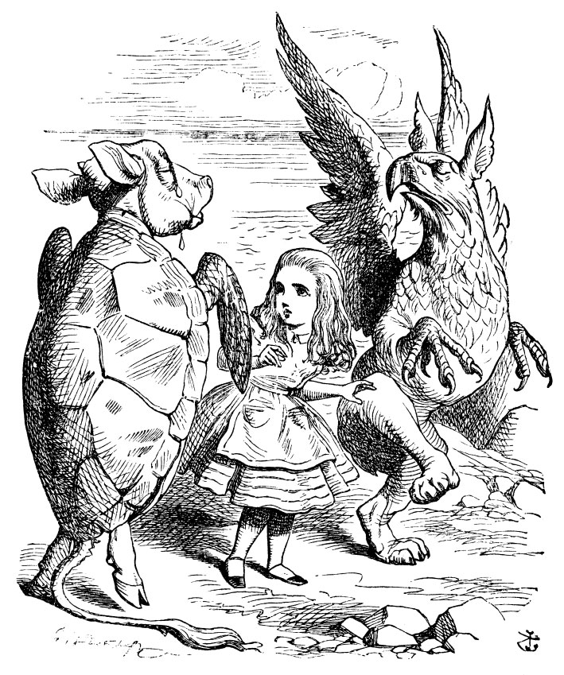

Yalancı Su Kaplumbağası derinden bir iç çekip, yüzgeçlerinden birinin tersiyle gözlerini sildi. Alice'e bakıp bir şeyler söylemeye çalıştı, ne var ki bir iki dakika boyunca sesi hıçkırıklarla boğuldu. “Sanki boğazına kılçık kaçmış,” dedi Grifon ve Yalancı Su Kaplumbağasını sallayıp sırtına vurmaya başladı. Sesi sonunda düzeldi ve yanaklarına süzülen gözyaşlarıyla başladı yeniden anlatmaya...
“Denizin altında belki de fazla bir yaşamışlığın yoktur...” (‘Yoktur,’ dedi Alice) “Bir ıstakozla da karşılaşmadın belki de...” (Alice, ‘Bir keresinde tadına...’ diye tam başlayacaktı ki, hemen kendini toparlayıp, ‘Hayır, hiç,’ dedi.) “O halde ıstakoz kadrilinin de ne eğlenceli bir dans olduğunu bilmezsin.”
“Doğrusu bilmiyorum,” dedi Alice. “Nasıl bir dans?”
“Bak sana anlatayım,” dedi Grifon. “Önce, kumsal boyunca bir sıra oluşturuyorsunuz...”
“İki sıra!” diye bağırdı, Yalancı Su Kaplumbağası. “Ayı balıkları, su kaplumbağaları falan filan işte; sonra ortalıktaki denizanala-rını temizlediğinizde...”
“Bu genelde epey zaman alır,” diye lafa daldı Grifon.
“... iki adım ilerlersiniz...”
“Herkes eş olarak bir ıstakoz alır!” diye bağırdı Grifon.
“Tabii ki,” dedi Yalancı Su Kaplumbağası. “İki adım ilerle, eşler...”
“... ıstakozları değiştirir, sonra da aynı sırayla geri çekilirsiniz,” diye devam etti Grifon.
“Hani bilirsin işte,” dedi Yalancı Su Kaplumbağası, “kaldırıp fırlatırsınız...”
“Istakozları!” diye haykırdı, Grifon havaya sıçrayarak.
“... denizde fırlatabildiğin kadar uzağa...”
“Ardından da başlarsınız peşlerinden yüzmeye!” diye çığlık kopardı Grifon.
“Denizde takla atmaya,” diye bağırdı Yalancı Su Kaplumbağası, çılgınca hoplayıp zıplayarak.
“Yeniden değiştirirsiniz ıstakozları,” diye avazı çıktığınca bağırdı Grifon.
“Sonra da karaya çıkarsınız... işte ilk figür bu,” dedi Yalancı Su Kaplumbağası aniden sesini alçaltarak; biraz önce deliler gibi hoplayıp zıplayan bu iki yaratık yeniden usulca yerlerine oturup hüzünlü hüzünlü Alice’e baktılar.
“Çok hoş bir dans olmalı,” dedi Alice çekine çekine.

“Bir bölümünü izlemek ister misin?” dedi Yalancı Su Kaplumbağası.
“Hem de nasıl,” diye cevap verdi Alice.
“Hadi, ilk figürü deneyelim!” dedi Yalancı Su Kaplumbağası Grifon’a. “Istakozlar olmasa da olur. Hangimiz şarkıyı söyleyecek?” ”Ah! Sen söyle,” dedi Grifon. “Ben sözlerini unuttum.” Böylece büyük bir ciddiyet içinde Alice’in etrafında dönerek dans etmeye başladılar; Alice’e çok yaklaştıkları sırada yer yer ayaklarına basıyorlardı; Yalancı Su Kaplumbağası bir taraftan hüzünlü hüzünlü şarkıyı söylerken, diğer taraftan da tempo tutmak için Grifon ile beraber ön ayaklarını sallıyordu.
‘“Az biraz hızlı yürür müsün?’ dedi mezgit salyangoza.
‘Hemen ardımızda domuz balığı, basmakta kuyruğuma.
Bak ıstakozlarla kaplumbağalar ilerliyorlar nasıl da canla başla!
Bekliyorlar bizi sahilde... gel etme n’olur katıl dansa.
Olur mu, olmaz mı, olur mu, olmaz mı? katıl n’olur dansa.
Olur mu, olmaz mı, olur mu, olmaz mı? katıl n’olur dansa.
Bilemezsin sahiden nasıl da varırız zevkine
Kaldırıp attıklarında bizi ıstakozlarla denize!’
Salyangoz ‘Olmaz, çok uzak! Çok uzak!’ dedi bakarken ona göz ucuyla
Teşekkür etti mezgite kibarca, ama
katılmayacaktı dansa.
Olmazdı, olamazdı, olmazdı, olamazdı katılamazdı bu dansa.
Olmazdı, olamazdı, olmazdı, olamazdı katılamazdı bu dansa.
‘Ne çıkar sanki ne kadar uzağa gittiğimizden,’ dedi pullu arkadaşı.
‘Biliyorsun ki yine bir başka kıyı öbür yakası.
İngiltere ne kadar uzaksa, yakındır o kadar Fransa...
Öyleyse sararıp solma sevgili salyangozum katıl n’olur dansa.
Olur mu, olmaz mı, olur mu, olmaz mı? katıl n'olur dansa.
Olur mu olmaz mı olur mu olmaz mı? katıl n’olur dansa.”’
Alice şarkının nihayet bitmiş olmasından dolayı derin bir nefes alarak, “Teşekkür ederim, seyretmesi çok güzeldi,” dedi. “Mezgitle ilgili şu acayip şarkı da öyle hoşuma gitti ki.”
“Ha, mezgitten laf açılmışken,” dedi Yalancı Su Kaplumbağası, “bu balıklar... tabii ki mezgit görmüşsündür.”
“Evet,” dedi Alice, “Çoğunlukla yem...” diyecekken birden kendini toparladı.
“Yemin nerede olduğunu bilmiyorum,” dedi Yalancı Su Kaplumbağası, “ama onları bu kadar çok gördüysen, tabii ki nasıl bir şey olduklarını bilirsin.”
“Öyle,” diye yanıtladı, Alice düşünceli düşünceli. “Kuyrukları ağızlarına sokuludur... üzerleri de ekmek kırıntısıyla kaplanır.”
“Kırıntı konusunda yanılıyorsun,” dedi Yalancı Su Kaplumbağası. “Deniz tüm kırıntıları silip süpürür. Ama, doğru, kuyrukları ağızlarına sokulu; bunun nedeni de...” Burada Yalancı Su Kaplumbağası esneyip gözlerini kapatarak, “Nedenini de sen anlatıver,” dedi Crifon’a.
“Nedeni,” dedi Crifon. “Bunlar ıstakozlar gibi dansa katılmak isterler. Bu yüzden denize fırlatılırlar. Denize düşecekleri mesafe çok uzundur. Bu yüzden kuyruklarını sıkıca ağızlarına alırlar. Bir daha da ağızlarından çıkaramazlar. İşte bu yüzden.”
“Teşekkür ederim,” dedi Alice, “çok ilginç. Mezgit hakkında hiç bu kadar bilgim olmamıştı.”
“İstersen daha fazla bilgi verebilirim,” dedi Grifon. “Ona neden mezgit dendiğini biliyor musun?”
“Hiç düşünmedim doğrusu,” dedi Alice. “Neden?”
“Bak anlatayım sana. Önceleri adı bezgitmiş. İşsiz güçsüz bezgin bezgin dolaşır dururmuş dünya sularında, sonunda bundan bıkmış, gitmiş yerleşmiş Avrupa sularına. Başlamış ayakkabı işine. İşleri iyi gitmiş, çok da mesutmuş, adını da mestgit olarak değiştirmiş. Bu sonra zamanla mezgite dönüşmüş.”
Alice'in kafası allak bullak olmuştu. “Yani ayakkabı boyuyor, ayakkabı yapıyor öyle mi!” dedi şaşkın şaşkın.
“Tabii ki. Ya seninkiler nasıl böyle parlak?”
Alice, ayakkabılarına dönüp şöyle bir baktı ve cevap vermeden önce bir süre düşündü. “Boya ve cila sayesinde olsa gerek.”
“Suyun altındaki ayakkabılar da mezgit sayesinde böyle parlak, işte. Şimdi öğrendin mi?” dedi Grifon boğuk bir ses tonuyla.
“Peki oradaki ayakkabılar neden yapılır?” diye sordu Alice büyük bir şaşkınlık içinde.
“Pençe balığı ve kayış balığından tabii ki,” diye yanıtladı Grifon sabrı tükenmiş bir halde: “En alık balık bile bunu bilir.”
“Ben mezgitin yerinde olsaydım,” dedi aklı hâlâ şarkıda olan Alice, “domuz balığına derdim ki, ‘Geri çekil, lütfen. Bizimle olmanı istemiyoruz!’”
“Onu yanlarında götürmek zorundalar,” dedi Yalana Su Kaplumbağası. “Aklı başında hiçbir balık domuzsuz yola çıkmaz.” “Gerçekten öyle mi?” dedi Alice hayretler içinde kalarak.
“Tabii ki öyle,” dedi Yalancı Su Kaplumbağası. “Ola ki bana bir balık gelip yolculuğa çıkacağını söyleyecek olsa, ‘Hangi domuz ile?’ diye sorarım.”
“Omuz, yani omuzdaş ile demek istiyorsunuz galiba?” dedi Alice.
“Ağzımdan çıkan neyse kastettiğim de odur,” dedi Yalancı Su Kaplumbağası gücenmiş bir ses tonuyla. Grifon ekledi, “Hadi, şimdi senin serüvenlerini dinleyelim.”
“Anlatırım, anlatmasına da... ama bu sabahtan başlayarak,” dedi Alice çekine çekine: “Düne gitmenin hiçbir anlamı yok, çünkü ben dün bambaşka biriydim.”
“Ne dediğini açıkla bakalım,” dedi Yalancı Su Kaplumbağası.
“Hayır, hayır! Önce serüvenlerin,” dedi Grifon sabırsızlıkla, ”Açıklamaların sonu hiç gelmez.”
Böylece, Alice Beyaz Tavşanı gördüğü o ilk andan başlayarak serüvenlerini anlatmaya koyuldu. İki yaratığın biri bir yandan diğeri öteki yandan Alice’e sokulup gözlerini ve ağızlarını kocaman açıp onu dinlemeye başladıkları anlarda kendini biraz gergin hissetti, ama gittikçe cesaretini toplamaya başladı. Dinleyicileri, Tırtıl’a okuduğu ‘Ko-cadın Wilfiam Baba,’ şiirinin olduğu bölüme gelinceye kadar onu pür dikkat dinlediler; ne zaman ki bu şiiri okumaya başladı, Yalana Su Kaplumbağası derin bir nefes alıp, “Bu çok tuhaf,” dedi.
“Bundan daha acayip bir şey olamaz dünyada,” dedi Grifon.
“Demek sözler ağzından farklı çıktı, ha!” dedi Yalancı Su Kaplumbağası düşünceli bir şekilde. “Şimdi başka bir şeyler okumasını istiyorum. Ona başlamasını söyle.” Yalancı Su Kaplumbağası, Grifon’un sanki Alice üzerinde bir otoritesi olduğunu düşünüyormuş gibi ona bakıyordu.
“Kalk ayağa ve ‘Bu Miskinin Sesidir’ şiirini oku,” dedi Grifon. “Bu yaratıklar da boyuna bana emirler yağdırıp, dersleri tekrarlatıyorlar,” diye geçirdi içinden Alice. “Şu an okulda olsam da olurdu.” Ne var ki, kalkıp yine de şiiri okumaya başladı, ama kafası ıstakoz kadriliyle öyle bir allak bullaktı ki, ağzından çıkanları kulağı pek duymuyordu; şiir gerçekten de çok acayip bir hal almıştı:
“Istakozun sesi bu; duydum onun şöyle deyişini:
‘Ne çok kızarttınız böyle beni, tatlandırmalıyım saçlarımı.’
Ördeğin düzeltmesi gibi gözka-paklarıyla kemerini düğmelerini O da düzeltir burnuyla, hem de dışa döndürür ayak parmaklarını.
Değmeyin keyfine kumlar tümden kuruduğunda Söyleyin ha, kim oluyor ki şu köpek balığı da!
Ne ki sular kabarıp da doluşunca köpek balıkları etrafa Titrek ve ürkek çıkar sesi pekala.”
“Bu benim çocukluğumda söylediğimden çok farklı,” dedi Grifon.
“Şey, ben de daha önce hiç duymamıştım,” dedi Yalancı Su Kaplumbağası. “Ama saçmalığına diyecek yok doğrusu.”
Alice, hiçbir şey demedi; başını avuçlarının içine alıp, acaba bir daha her şey normale dönecek mi diye kara kara düşünerek öylece oturdu.
“Şiiri açıklasaydın iyi olacaktı,” dedi Yalancı Su Kaplumbağası. “Açıklayamaz,” dedi Grifon telaşla, “ikinci kıtaya geç.”
“Ama şu ayak parmakları meselesi,” diye ısrar etti Yalancı Su Kaplumbağası. “Nasıl oluyor da ayak parmaklarını burnuyla dışa döndürüyor?”
“Bu dansın ilk figürü,” dedi Alice, ama kendi kafası da fena halde karışmıştı, bir an önce konunun değişmesini istiyordu.
“İkinci kıtayla devam et,” diye tekrarladı Grifon. “Hani, ‘Geçerken bahçesinden” diye başlıyor.”
Alice, ağzından çıkacak her şeyin yanlış olacağından emin olsa da, ona karşı gelmeyi göze alamadı ve titrek bir sesle devam etti:
“Geçerken bahçesinden, bir göz atıverdim içeriye
Bir Baykuş’la Panter nasıl bölüşüyor böreği diye
Alırken Panter yufkayı, sosu ve eti
Kaldı ziyafetten Baykuş’a tabağın dibi.
Hepten bittiğinde börek, lütfedilip de Baykuş’a
İzin verildi kibarca, attı kaşığını cebe o da.
Alırken Panter çatal bıçağı hırlaya hırlaya.
Ve bitiminde şölenin...”
“Bir taraftan açıklamasını vermedikten sonra, bütün bu saçmalıkları tekrarlamanın ne yararı var,” diye kesti şiiri Yalancı Su Kaplumbağası. “Ömrümde insanın kafasını bu kadar karıştıran bir şey duymadım!”
“Evet, artık burada kessen iyi olacak,” dedi Grifon. Alice öyle bir rahatlamıştı ki, sormayın gitsin.
“Istakoz Kadrilinden bir figür daha gösterelim mi?” diye sordu Grifon. “Yoksa Yalancı Su Kaplumbağası şarkı mı söylesin?”
“Eğer o da istiyorsa, ne olur bir şarkı,” diye öyle bir atıldı ki Alice, Grifon biraz gücenerek, “Tabii, zevkler ve renkler tartışılmaz. Ona Yalancı Kaplumbağa Çorbasını söylesene dostum,” dedi.
Yalancı Su Kaplumbağası derinden bir iç çekip yer yer hıçkırıklarla boğulan sesiyle başladı şarkısını söylemeye.
“Nefis çorba, bol sebzeli ve besleyici
Bekliyor bizi tasta sıcacık öylece!
Kim eğilmez söyleyin, bu enfes çorbanın önünde?
Akşam çorbası, nefis çorba!
Akşam çorbası, nefis çorba!
Nefiiis Çorbaaa!
Nefiiis Çorbaaa!
Akşam çorbası
Nefis, nefis çorba!
Nefis çorba! Kim bakar balığa,
Av etine, başka yemeklere ya da?
Uğruna tüm lezzetleri kim etmez kurba
Niki kuruşluk ah nefis çorba?
İki kurulşluk ah nefis çorba?
Nefiiis Çorbaaa!
Nefiiis Çorbaaa!
Akşam çorbası
Nefis, nefis çorba!”
“Nakarat,” diye haykırdı Grifon; Yalancı Su Kaplumbağası tam tekrarlamaya başlamıştı ki, uzaklardan, “Mahkeme Başlıyooor!” diye bir çığlık koptu.
“Hadi!” dedi Grifon, Alice’in elinen tutup, şarkının bitmesini beklemeden yerinden fırladı.
“ne mahkemesi?” diye sordu Alice nefes nefese koşarken; ama Grifon, sadece “Hadi!” diyerek daha bir hızlanarak koşuyordu; bu sırada arkadan meltemle gittikçe zayıflayarak gelen şu hüzünlü ezgi duyuluyordu:
“Ak-şaaam çooor-bası”
Nefis, nefis çorba!”